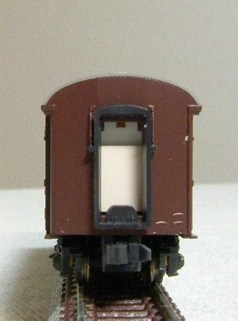
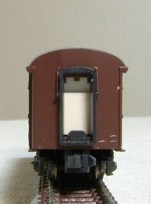

オハ35戦後型
オハ35
オハ35の製造は戦前～戦後と太平洋戦争をまたいで行われています。 主に戦前に製造された初期の車両はスハ32などと同じく屋根・妻面が絞られていましたが、 戦後しばらくして工法が簡略化され、車端部の形状が直線的になりました。 オハ35ではわずかに番号を飛ばし(694-699が空き番)、700～として番号が区分されています。
初期の車両は「絞り折妻」で製造されました。 屋根の形状は、線路方向の絞りがなくなり、幅方向にのみ車端に向かって絞られています。 この時期、輸送力優先でオハフ33は製造されていないため対応する構造のオハフ33は新製されていません。 ※ のちにオハ35を改造してオハフ33を製造した際に絞り折妻のオハフ33(オハフ33-1500)も登場しています。
後期になると屋根の絞りが完全になくなり一見スハ43系に見える形状になりました。
ただし相変わらず折妻で妻板の屋根以外の部分の幅が狭いためキノコのようになっており「キノコ折妻」と呼ばれています。
屋根の材質は、キャンバスと鋼板の2種類があるのは相変わらずです。
屋根のベンチレーターは別パーツ化しました。
屋根の説明は文章で書いてもわけわからないので…写真取りました。 右側が戦前型、真ん中が絞り折妻、左がキノコ折妻です。 絞り折妻とキノコ折妻の違いはドアの上部あたりを見るとわかるかなと。
模型ですが、屋根の妻面側は青で塗装しています。 接着して隙間を埋めるまでやるとよいのかもしれませんが、分解できなくなるんでやってません。
キノコ折妻の車両は、オハフ33戦後型の車掌室窓を1,000mmに拡げて製作しています。 別の車体から切り出した窓枠を、拡げた窓にはめ込みます。
加工の際の一工夫として、0.3㎜のプラバンを瞬間接着剤で裏側から貼り付けてやっています。 瞬間接着剤はそんなに固くつかないので、はめ込んで固着後にデザインナイフで簡単にはがすことができます。
 

キャンバス屋根と鋼板屋根を作り分けてみました。
キャンバス押さえは、イエロートレインのパーツです。